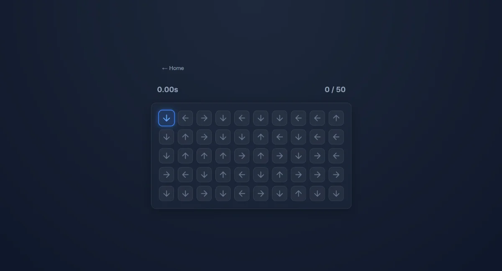

프로젝트
2026.06.05 첫 배포 이후 커밋 80개. 리더보드, 데일리 스트릭, 도전과제, 통계, 실시간 멀티플레이(v1.0.0)를 차례로 붙였고, 9월에는 디스코드 액티비티로 옮겨 음성 채널에서 함께 할 수 있게 했습니다.
자정마다 바뀌는 50개의 방향키를 가장 빠르게 입력해 겨루는 반응속도 웹 미니게임입니다. 데일리 퍼즐 형식을 반응속도 게임에 가져왔고, 기획부터 배포와 운영까지 혼자 맡았습니다.

2026.06.05 첫 배포 이후 커밋 80개. 리더보드, 데일리 스트릭, 도전과제, 통계, 실시간 멀티플레이(v1.0.0)를 차례로 붙였고, 9월에는 디스코드 액티비티로 옮겨 음성 채널에서 함께 할 수 있게 했습니다.
React 19 · Vite · Firebase (Hosting, Firestore, Auth) · Cloudflare Workers · Discord Embedded App SDK
데일리 구조, 기록 기준, 변조 방지, 모바일 입력. 각 항목은 상황 → 결정 → 이유 → 한계 순서입니다.